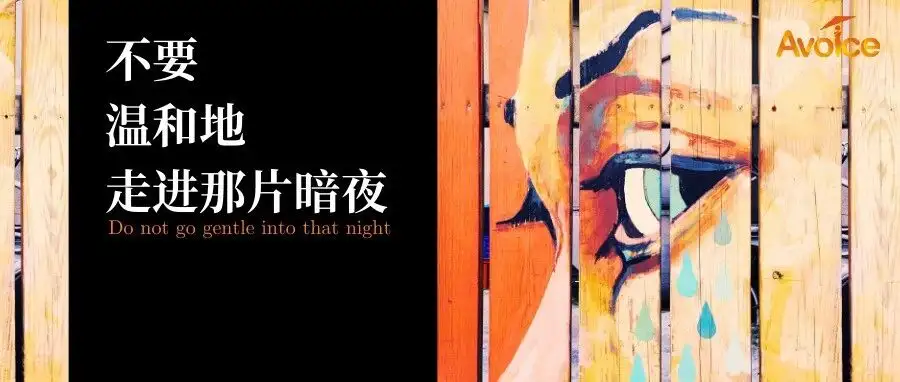
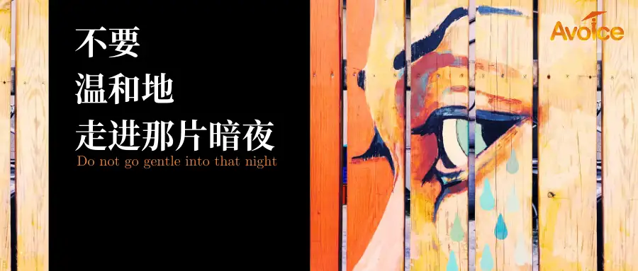
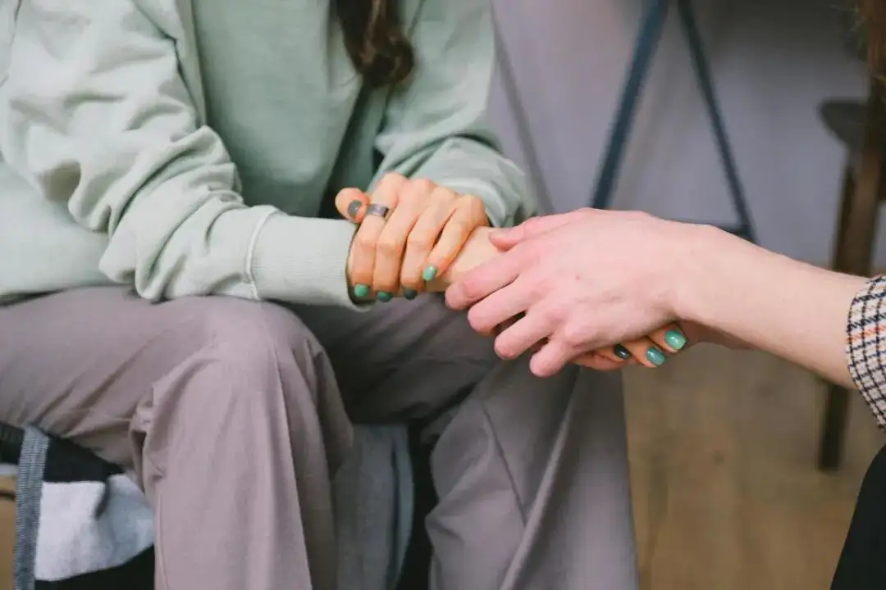

从遭遇家庭暴力到被迫与其搏斗，晓晴在痛苦、忍耐、孤立和怀疑之中再度寻回反抗的勇气和力量。
她的故事不仅是一段个人抗争的记录，也是一则希望的启示，提醒我们在系统性暴力的面前重拾栖居于这个世界的能力， 为了铭记而叙说，为了解放而凝聚。
身处异乡，近乎孤立无援之际，晓晴抱着烧得小脸红肿的婴儿坐在急诊室内流泪，此情此景，她这辈子都无法忘却。
孩子刚满月，晓晴的身体尚未恢复，但是一心为己谋利的前夫却不会考虑这些，而是乘人之危，使她陷入无尽的痛苦。
1
谎言编织的罗网：揭露“完美”追求者的真容
晓晴工作于电子工程系，曾是美国内布拉斯加林肯大学分校的一名研究员。
2022年到达美国林肯后，她在一次学术交流中认识了在同校机械与材料学院读博的鑫。鑫似乎对她一见钟情，在初见后便“穷追不舍”。很快二人结了婚，在男方的提议下开始备孕，准备组建新家庭。
第一次家暴发生在生产的前一天晚上，晓晴才惊觉，自己信任的丈夫不过是个精心伪装的恶魔。 生产当天鑫就对晓晴实施了第二次家暴。而生产后的第五天，晓晴刚出院回家，第三次家暴再度降临。
她不禁回想，之前的那个完美追求者怎么会变成这样，却发现一切早已有迹可循：晓晴满足绿卡申请条件，确立关系后，鑫便催促晓晴给他的父母办美国签证并为他申请绿卡，在晓晴精力不足以兼顾工作和繁琐的申请事务时他便会转变态度；晓晴研究员的身份和出色的学术能力能给鑫带来许多学术资源与人脉网络，这对他而言无疑是极大的助力。甚至在晓晴孕晚期时，她依然在帮鑫做实验、写PPT和准备组会汇报。鑫接近晓晴，很可能就是出于对学术资源与美国身份的企图。
2
围猎下的帮凶：无处可逃？尚有生路
一般 来说，家暴是指在婚姻或其他亲密关系中，一方对另一方施加的身体、性别、心理或经济上的暴力或威胁，往往由于现实之亲属关系与利益的约束而出现一定程度的隐蔽性，以至于这类伤害行为被掩盖或要求不得声张外扬、家人以外之人亦常袖手旁观，不愿介入或协助。[1]
而对于晓晴而言，这场暴力并不止于家庭内部，一系列的帮凶与骚扰使其更像是一场早有蓄谋的围猎。
在第三次家暴发生后，男方家长拿出了早已准备好的协议逼迫晓晴及其家人签字，想用20万买断与孩子的关系；胁迫未果后，男方一家便联系了当地的亚洲协会，在华人群体内对晓晴及其家人进行造谣、诽谤和污蔑；在晓晴向鑫的导师求助时，其导师为掩盖学术不端的劣迹而选择继续包庇施暴者，没有向晓晴做出任何回应，学校也始终敷衍不作为；男方的出轨对象在社交平台上不断抹黑晓晴，并以自杀威胁；鑫的母亲，也就是孩子的奶奶，甚至为了维护形象而散播了大量未经保护处理的婴儿照片。
值得警醒的是，在遭遇家暴时，应尽快保留证据，向执法机关、妇女协会、家暴保护组织等求助，而应尽量避免在对方的关系网中求助。
多方求助无果，面对着巨大的工作压力、生活压力与精神压力，晓晴在深渊中愈陷愈深。在7月份时，晓晴联系到了AWDPI，事情也慢慢出现转机。
3
曙光微现：法律保护与社会支持
通过AWDPI，晓晴获得了一些相关法律援助和当地妇女支持协会的信息。在当地协会的帮助下，晓晴终于解决了因男方拒不承认关系而导致的孩子身份证件问题，孩子得以随外公外婆回国，应由男方支付的法定抚养费也开始被强制执行。

美国当地的妇女协会也为孩子申请到了一些经济补贴，并提供免费的尿不湿与奶粉。这些实质性的帮助让晓晴深受感动。
一开始晓晴以为，只有男方承认与孩子的关系并配合相关手续，孩子的身份证件与出国材料才能得以审批，赡养费也由双方协商发放。在维权的过程中，她渐渐熟悉了法律规定与程序：根据美国法律，只要孩子与男方有血缘关系，赡养费便会被强制执行。
晓晴能够坚持反抗，除了自身的坚强和对孩子的爱，还离不开父母与当地社群的支持。以下是一些在美国受到家暴时可以寻求援助的组织，这些组织提供的服务包括庇护、心理辅导、法律援助、经济支持等，有助于帮助受害者重建生活：
1.The National Domestic Violence Hotline (NDVH)
提供全天候的热线服务，帮助受害者找到紧急庇护所、法律援助、心理支持等。
更多信息请拨打：
1-800-799-SAFE(7233)
或访问 ：
thehotline.org
2.National Coalition Against Domestic Violence (NCADV)
美国的全国性组织，提供教育、预防和政策倡导，并通过其网络连接地方支持服务。
更多信息请访问 ：
ncadv.org
3. Women Against Abuse
位于费城的组织，提供庇护所、法律援助、辅导等全面支持。
更多信息请访问：
womenagainstabuse.org
4.Futures Without Violence
该组织提供资源和信息，帮助家暴受害者并倡导政策改革。
更多信息请访问：
futureswithoutviolence.org
5.Safe Horizon
美国最大的受害者援助组织之一，提供庇护所、法律服务、危机干预等支持，位于纽约。
更多信息请访问：
safehorizon.org
6.Asian Pacific Institute on Gender-Based Violence (APIGBV)
主要为亚裔和太平洋岛屿社区的家暴受害者提供支持。
更多信息请访问：
api-gbv.org
4
破晓之后，一路晴天
晓晴的内核无疑是强大而稳定的，在面对“以单亲妈妈的身份博取同情”的指责时，她坚定地认为“单亲妈妈身份不是示弱，成为单亲妈妈本身就是勇敢和不屈服”。即便需要反复面对曾经的创伤，她也依然勇敢地站出来打破沉默：“如果说我之前跳进了一个大坑，现在也没有能力把坑填上，但至少我要把真相完整呈现出来，警醒之后的女孩，不至于步人后尘坠入坑中。”
对于遭受过性暴力的女孩，晓晴认为：“该勇敢起来的时候还是应该勇敢起来，积极地维护自己的利益。而不是认为这个事情可以翻过篇去，已经产生的伤害是无法被彻底消除的。在很多时候，暴力事件的发生也是有迹可寻的，不要等到最后一步受到伤害了才意识到问题的严重性，而是要尽可能地提高警惕意识。” 晓晴也表示，自己从妇女保护组织中获得的帮助让她看到了女性互助的力量，她也希望自己能加入国际上的女性权益保护组织，为更多的女性提供鼓励和援助。
目前晓晴仍在美国继续打拼，为自己和孩子争取一个更好的未来。我们也相信，她的人生会如她的名字般，此番破晓以后，一路皆是晴天。
References
[1] https://zh.wikipedia.org/wiki/%E5%AE%B6%E5%BA%AD%E6%9A%B4%E5%8A%9B
采访｜何香莲 汤欣然
撰稿｜欧阳印涵
校改｜王怡娴
排版/封面｜由晨阳
图片来源｜Pexels